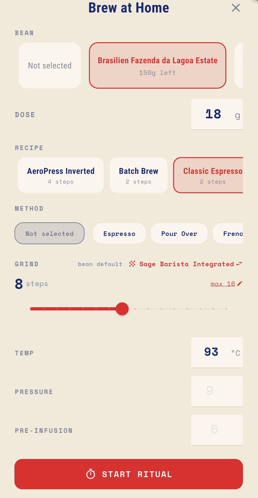

BREW WITH
INTENTION.
Track every bean, every brew, and every discovery. Your personal coffee journal, refined for the modern enthusiast.

SYSTEM SPECIFICATIONS
Sophisticated tools to elevate your morning ritual into an art form.
JOURNAL YOUR JOURNEY
Visualize your progress with interactive heat maps and detailed brew statistics. Track grind size, water temp, and extraction time to achieve ultimate consistency.


PERFECT YOUR POUR
Guided step-by-step brew recipes for espresso, pour-over, AeroPress, and more. A precision timer keeps your ritual on track.
MANAGE YOUR KIT
From vintage manual grinders to professional espresso machines. Organize your beans, track your recipes, and maintain equipment for peak performance.


ATLAS & FRIEND CIRCLES
Discover specialty cafés and roasteries on a curated global map. Create private circles with friends to share favorites, plan coffee crawls, and compare tasting notes.
THE FULL EXPERIENCE




"Coffee is a way of stealing time that should by rights belong to your older self."— TERRY PRATCHETT